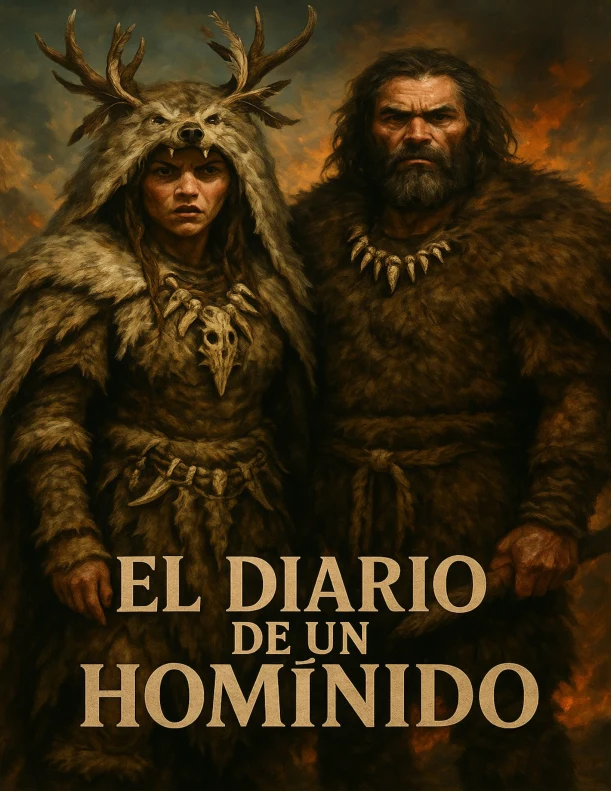
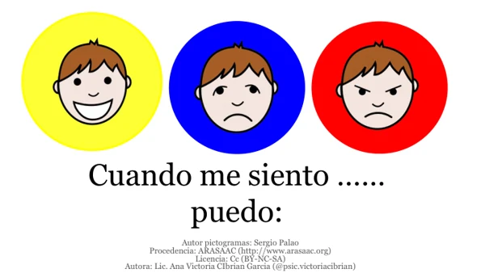
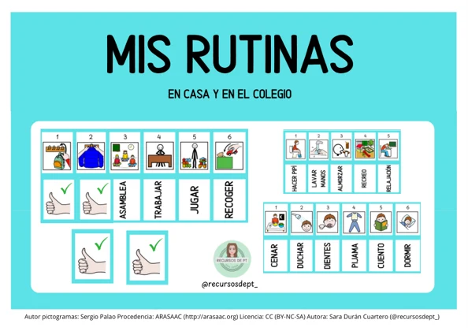

Libros listos para leer
EDUCACIÓN INICIAL
Álbumes para mirar, escuchar y contar en prekínder y kínder. Créditos y licencias
Libros de Primer Ciclo de Enseñanza Básica
Lecturas para 1.º a 4.º básico. Créditos, licencias y orientaciones de lectura
SEGUNDO CICLO DE ENSEÑANZA BÁSICA
Lecturas para 5.º a 8.º básico. Créditos y licencias
📖
Relatos y comprensión · HTML
El secreto del río
Lectura original gratuita con preguntas de comprensión.
📖 Leer ahoraPIE · Programa de Integración Escolar
7 recursosPara estudiantes
El cuento de la granja
Carmen Gallicchio · Adaptación del CEE Hospital San Rafael
Cuento con pictogramas y fotografías para reconocer animales y ordenar lo que ocurre en la granja.

Cuando me siento… puedo
Ana Victoria Cibrián García · ARASAAC
Cuadernillo visual para reconocer emociones y elegir cómo expresarlas.

Mis rutinas en casa y en el colegio
Sara Durán Cuartero · ARASAAC
Secuencias visuales para anticipar actividades y conversar sobre qué viene después. También sirve para trabajar en familia.
Para docentes
Trabajo colaborativo
Mineduc · Cartilla 2
Orientaciones para planificar en conjunto, organizar la coenseñanza y coordinar los apoyos del equipo de aula.
Accesibilidad cognitiva en Educación Parvularia
Subsecretaría de Educación Parvularia · Mineduc
Ejemplos de agendas visuales, señalización e historias sociales para facilitar la participación.
Para familias
Informe para la familia
Mineduc · Cartilla 1
Explica qué información entrega el establecimiento sobre fortalezas, avances y apoyos del estudiante.
¿Qué es la Comunicación Aumentativa y Alternativa?
Ceapat–Imserso · Tu opinión CuentAA
Ejemplos cotidianos para entender cómo se usan pictogramas, signos y comunicadores.
Créditos y licencias de los PDF alojados
Materiales de Ana Victoria Cibrián García y Sara Durán Cuartero, respectivamente. Pictogramas de Sergio Palao, procedentes de ARASAAC, propiedad del Gobierno de Aragón. PDF originales reproducidos bajo la licencia CC BY-NC-SA 4.0.
Fuentes: Cuando me siento… puedo y Mis rutinas en casa y en el colegio.
PRONTO
Libros recibidos cuya lectura se habilitará cuando se confirme la autorización de su edición.